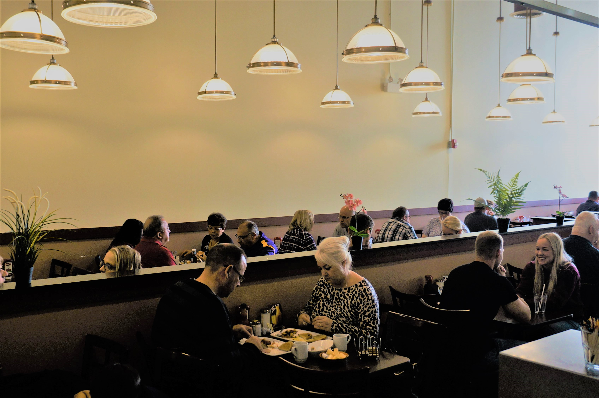
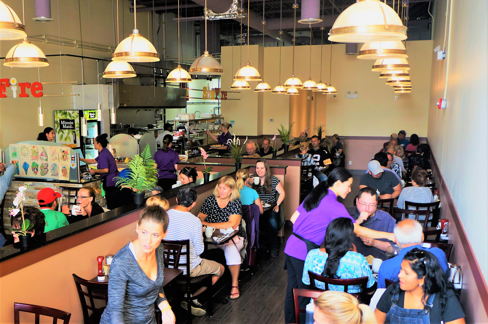
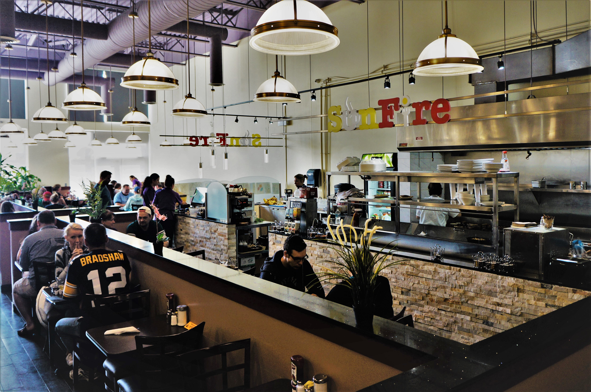
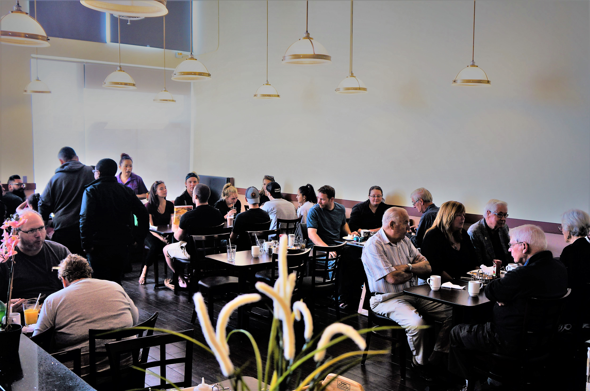
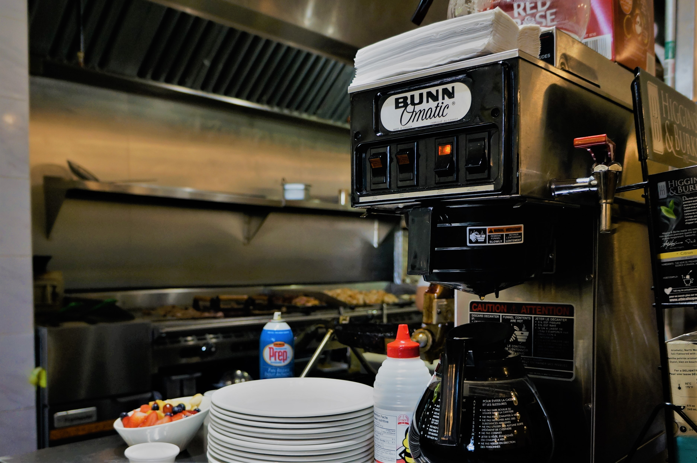
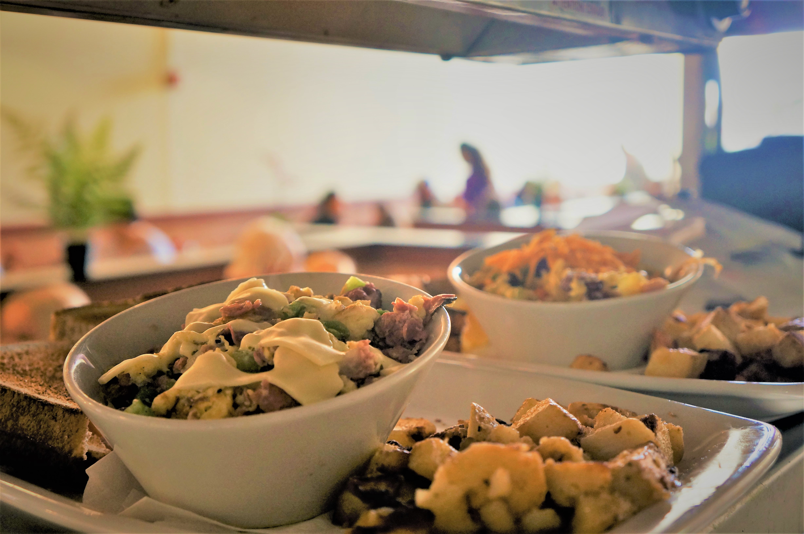
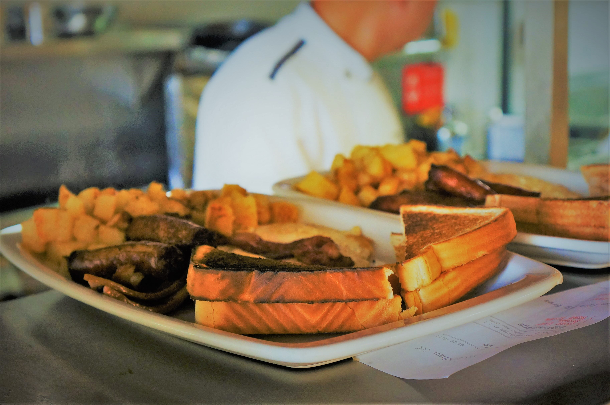

<link rel="import" href="../../bower_components/polymer/polymer-element.html">

<dom-module id="sunfire-about">
  <template>
    <style>
      :host {
        width: 100%;
        min-height: calc(100vh - 171px);
        display: flex;
        flex-direction: column;
        align-items: center;
        --carousel-component-button-color: #4b7c46;
        font-family: 'Helvetica', sans-serif;
      }
      
      .description {
        width: calc(100% - 180px);
        max-width: 740px;
        min-width: 200px;
        margin-top: 20px;
      }
      .description div {
        margin-top: 20px; 
      }

      carousel-component {
        width: calc(100% - 80px);
        max-width: 840px;
        min-width: 300px;
        margin: 40px 20px;
        contain: content;
      }

      carousel-component::after {
        display: block;
        content: '';
        padding-top: 75%; /* 4:3 = height is 75% of width */
      }

      carousel-component img {
        position: absolute;
        left: 50px;
        width: calc(100% - 100px);
        height: 100%;
      }
    </style>

    <div class="description"> 
      <div> 
        Sun Fire All Day Breakfast is the new take on breakfast! Our casual dining restaurants provide the perfect ambiance for enjoying a delicious twist on the classic breakfast, brunch, or lunch. We welcome family and friends to eat in or take out.
      </div>
      <div>
        The Sun Fire All Day Breakfast concept is unique and inviting, perfect for those who want to provide a breakfast experience that goes above and beyond the traditional, all at an affordable price. 
      </div>
    </div>

    <carousel-component>
      
      
      
      
      
      
      
      
      
      
      
      
      
      
    </carousel-component>
  </template>

  <script>
    class SunfireAbout extends Polymer.Element {
      static get is() { return 'sunfire-about'; }
      static get properties() {
        return {
        };
      }
    }

    window.customElements.define(SunfireAbout.is, SunfireAbout);
  </script>
</dom-module>
